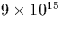
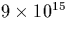

A complication with the unravelling of the processes by which oxygen atoms aggregate in the presence of these impurities is the existence of more than one type of oxygen complex. In N-doped material the dominant nitrogen defect is the pair which itself forms electrically inactive NNO defects [103,177]. These have to be distinguished from the shallow donor defects originating from Ni, and the question then arises as to which defect is actually formed.
High temperature annealing is normally used to break up any defect
complexes present in the material, and this will include N2i
pairs. On cooling, the diffusing Ni defects are trapped either by
Oi or Ni. A high concentration of Ni implies that N2i
pairs will be preferably formed, whereas a high oxygen concentration
may result in NiOi defects. Both defects subsequently complex
with oxygen to create either electrically inactive NNO or STD defects
in the form of NO2i. Sun et al [169] showed that
for N to have an effect on O precipitation it is essential to
pre-anneal at 1100 C; this step will be required to break up
the N2i pairs and any larger oxygen precipitates, and
homogenously distribute the Ni and Oi.
C; this step will be required to break up
the N2i pairs and any larger oxygen precipitates, and
homogenously distribute the Ni and Oi.
It is likely that the N-pair is more stable than NiOi and hence
slow cooling probably results in higher concentrations of NNO. Hara
et. al. [190] examined the effect of cooling rate on
N-rich Cz-Si, and found that in quenched Si they obtained high
concentrations of STDs, whereas in slow cooled Cz-Si the STD
concentration was much lower. This is consistent with the above
explanation. Slow cooling will also lead to out-gassing of nitrogen,
leaving less N2i pairs to mop up Oi forming NNO. Similarly,
evidence that high N concentrations do not necessarily result in high
concentrations of STDs has been shown by Griffin et. al.
[193] using PTIS on N doped samples annealed at
450 C. They found that N suppressed TD growth -- behaviour
similar to that of carbon doped Si where C-O complexes are formed.
In addition, for low doping levels of N (cm-3), they observed a large number of STDs, whereas for a higher
N doping level ( cm-3), the STD concentration
was strongly reduced. This result is consistent with N2i pairs
forming preferentially at higher concentrations, since Ni atoms are
able to combine before encountering any Oi.
C. They found that N suppressed TD growth -- behaviour
similar to that of carbon doped Si where C-O complexes are formed.
In addition, for low doping levels of N (cm-3), they observed a large number of STDs, whereas for a higher
N doping level ( cm-3), the STD concentration
was strongly reduced. This result is consistent with N2i pairs
forming preferentially at higher concentrations, since Ni atoms are
able to combine before encountering any Oi.
The formation kinetics of the NO2i defects will be dependent on the quantities of each reaction component, and the rate constants for many different reactions:
Here N2i is the nitrogen pair defect, N2iO is the electrically inactive NN-O defect, and NiO2i is the defect proposed here as a STD. In theory there could be other reaction components such as N3i, as well as reaction paths involving other point defects such as C.